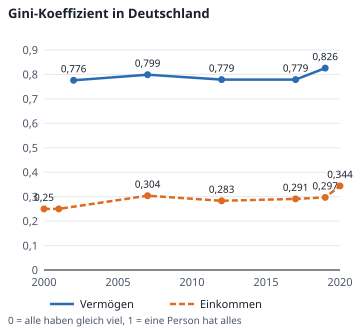

Dezile und Gini
Mit einem KI-Tutor lernen
Ein KI-Tutor erklärt dir diese Seite und hilft dir bei den Aufgaben. Wähl deinen Assistenten:
Mit Claude öffnen Mit ChatGPT öffnen Mit Mistral Vibe öffnen
Du nutzt dein eigenes Konto beim Anbieter. Der Assistent ist kein Angebot von lernapps.net: lernapps liefert nur Inhalte und Aufgaben. Die Wahl gilt für alle Seiten, nur auf diesem Gerät.
Kurz ausprobiert
Nach dieser Seite kannst du Dezile und den Gini-Koeffizienten erklären und ablesen.
Aufgabe
Lösung
Alle haben gleich viel. richtige Antwort
0 ist die vollkommene Gleichverteilung.
Niemand hat etwas.
Der Gini sagt nichts darüber, wie viel es insgesamt gibt – nur, wie es verteilt ist.
Eine Person hat alles.
Das wäre ein Gini von 1, die größte Ungleichheit.
Der Gini-Koeffizient reicht von 0 (alle gleich) bis 1 (eine Person hat alles).
Das steckt dahinter
- Dezil
Ein Zehntel. Man ordnet alle Haushalte nach ihrem Einkommen und teilt sie in zehn gleich große Gruppen. Im 1. Dezil sind die 10 % mit dem geringsten Einkommen.
Von 2000 bis 2018 stiegen die Einkommen der oberen Dezile deutlich, die der unteren kaum (DIW 2021).
- Gini-Koeffizient
Ein Maß für Ungleichheit von 0 (alle haben gleich viel) bis 1 (eine Person hat alles).

Die obere Linie zeigt Vermögen, die untere Einkommen. Vergleiche die Höhe der Linien. Daten: Eurostat EU-SILC, DIW.
Quelle: eigene Zeichnung. Lizenz: CC-BY-4.0.Merke
- Gini höher = ungleicher.
- Vermögen sind viel ungleicher verteilt als Einkommen.
- Die Ungleichheit der Einkommen ist seit 2000 gestiegen.
Jetzt du
Aufgabe
Lösung
Richtige Antwort: 1. Dezil – die 10 % mit dem geringsten Einkommen; 10. Dezil – die 10 % mit dem höchsten Einkommen; Index 100 – der Ausgangswert eines Vergleichsjahrs
Dezile sind Zehntelgruppen; ein Index vergleicht mit einem Ausgangsjahr.
Aufgabe
Lösung
das Vermögen richtige Antwort
Sein Gini liegt um 0,8 – nahe an 1.
das Einkommen
Sein Gini liegt um 0,3. Das ist viel weniger ungleich als beim Vermögen.
Je höher der Gini, desto ungleicher. Vermögen liegt fast dreimal so hoch wie Einkommen.
Aufgabe
Lösung
Richtige Antwort: 0,094 (erlaubte Abweichung: 0,001)
0,344 − 0,25 = 0,094. Die Einkommen sind also ungleicher verteilt als im Jahr 2000.
Aufgabe
Lösung
Richtige Antwort: Die Aussage stimmt nicht.
Die oberen Dezile gewannen deutlich, die unteren kaum. Darum wuchs die Ungleichheit.
Offene Aufgabe
Formuliere 2 zentrale Aussagen zum Diagramm mit dem Gini-Koeffizienten – jede mit einer Zahl.
Eine gute Antwort enthält:
Lösung
- Vermögen sind viel ungleicher verteilt als Einkommen: 0,826 gegenüber 0,297 im Jahr 2019.
- Die Einkommen werden ungleicher: Der Gini stieg von 0,25 im Jahr 2000 auf 0,344 im Jahr 2020.
Als Nächstes: Wer gilt als armutsgefährdet?
Fehler gefunden oder eine Idee für diese App?